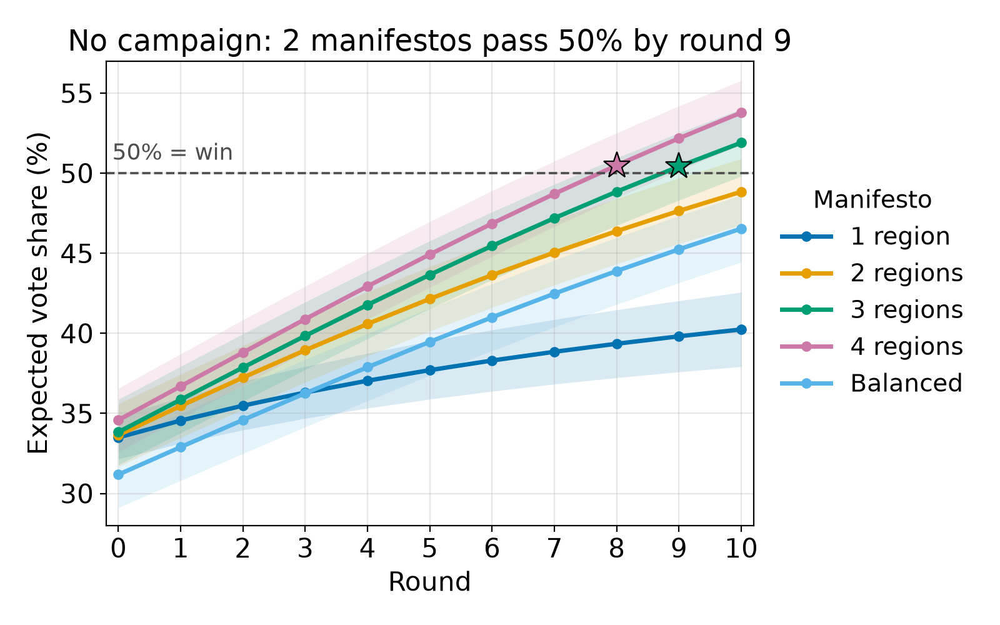

- No manifesto wins alone within the round allocation for the game (5 rounds). The blends do cross the threshold when extrapolated after the game duration.
- The 4-region blend leads: 44.9% at round 5 vs 37.3% for one region and when rolled out, it still performs better in a no-campaign environment.
- A flat 20% split starts worst (31%) and stays below every blend.
10,000 voters · no workers, media or surveys · manifestos built from archetype blends.